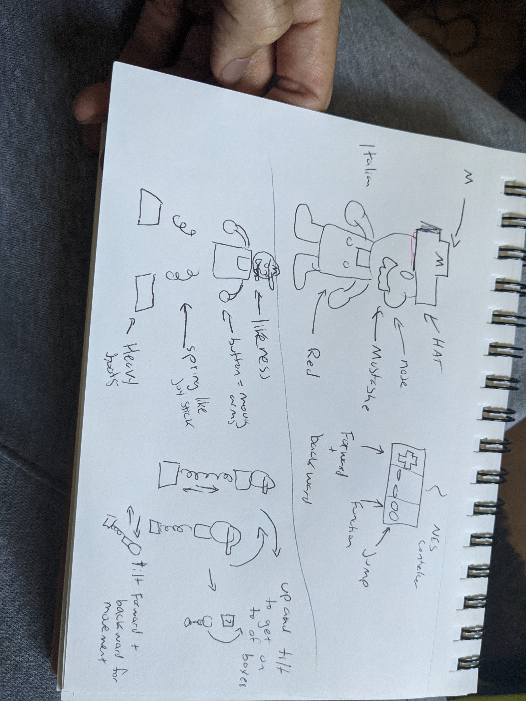
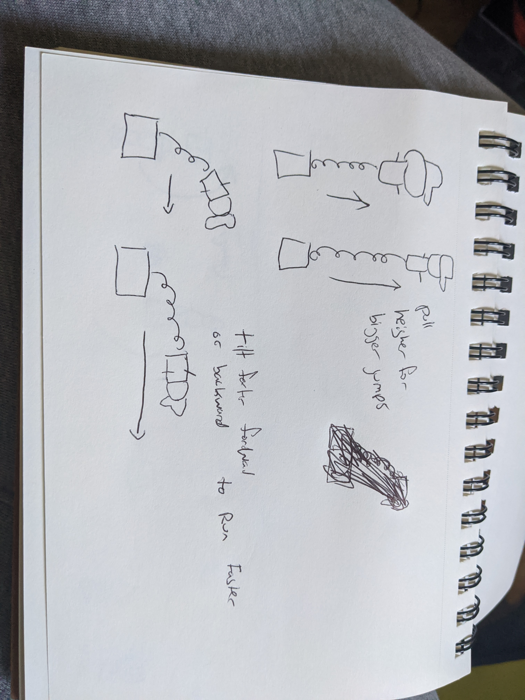
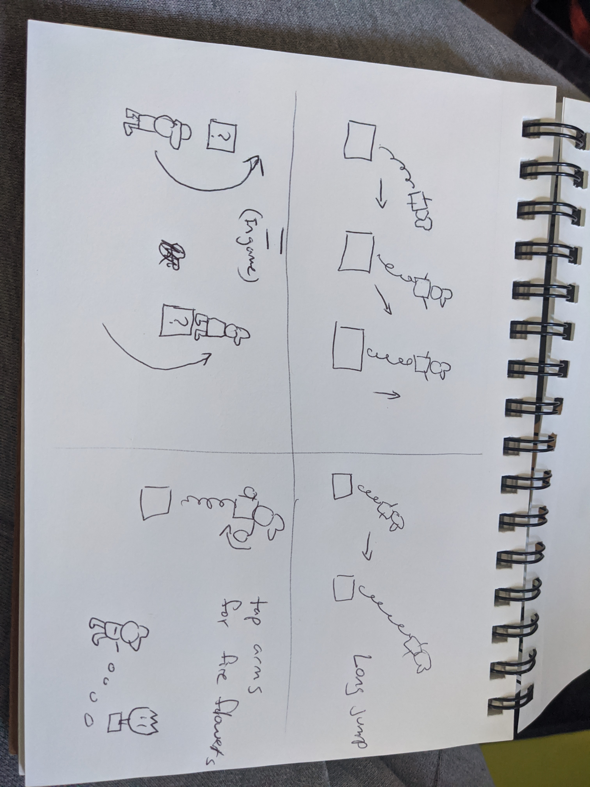
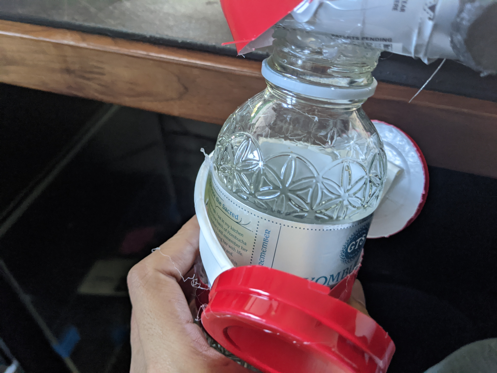
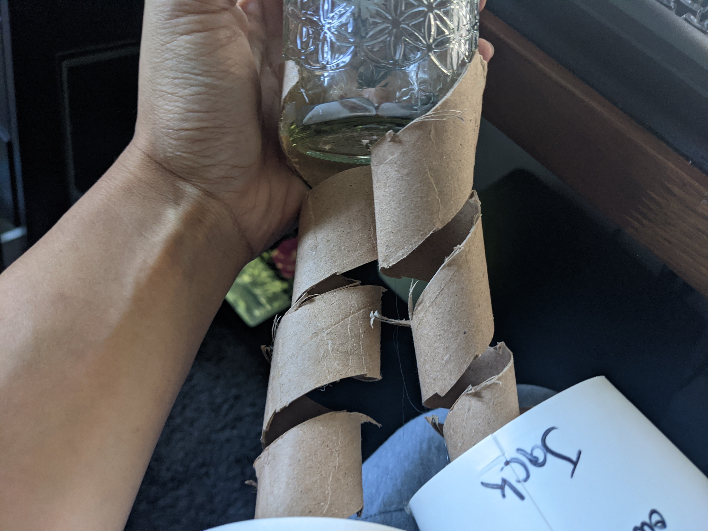
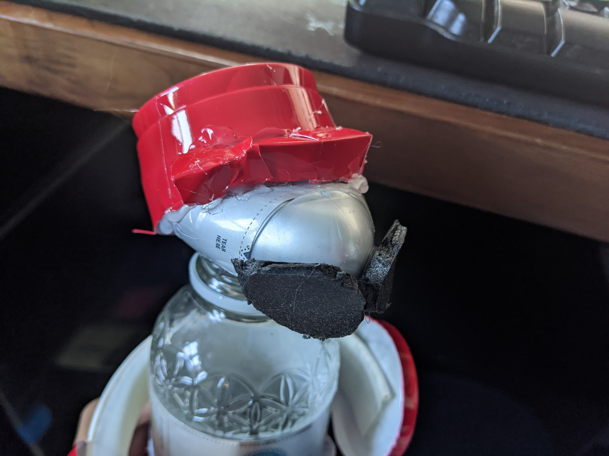
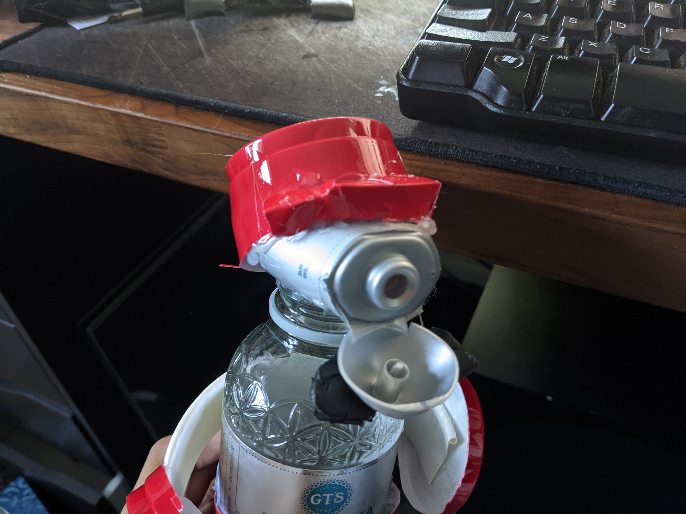
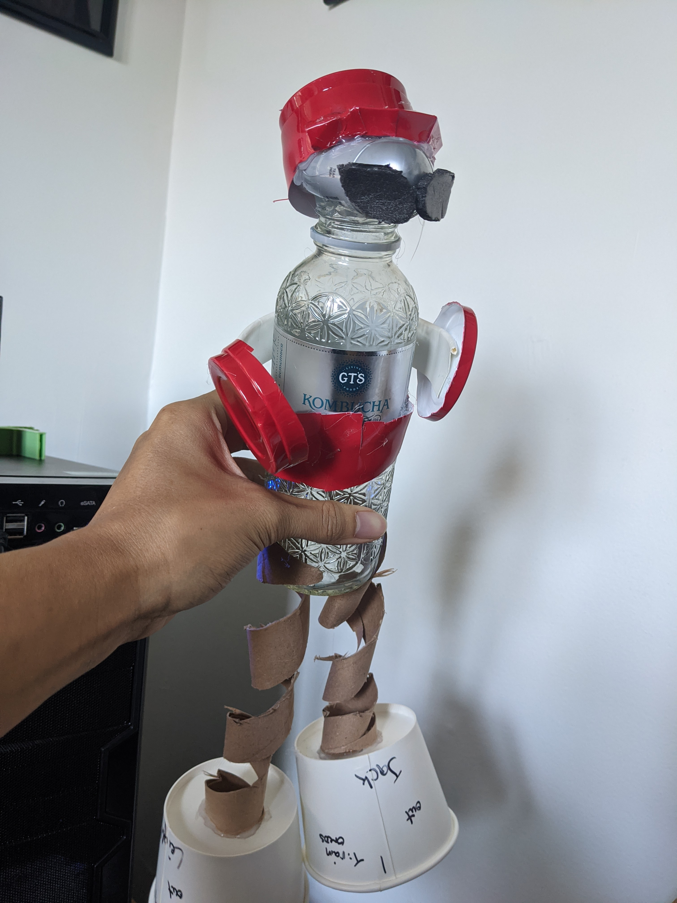
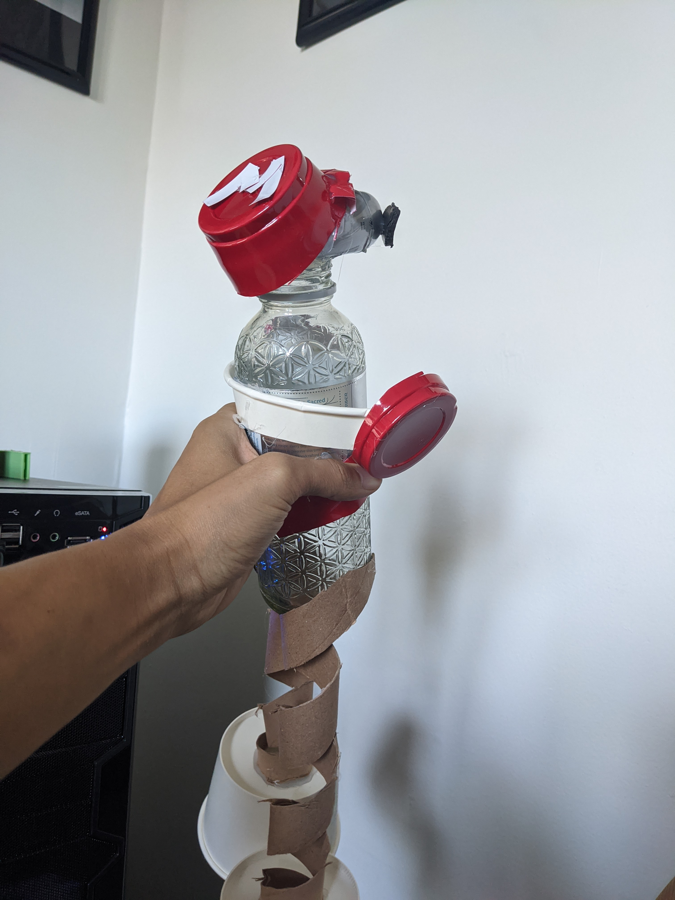

Ideation & Prototyping Week 3
Translating Affordances
For my project this week, I decided to make a controller for the well-known Super Mario Bros game for the Nintendo Entertainment System. Besides being the first game that came into my head, I figured that since it also had some limited controls, but such a wide array of actions, it might be perfect. It's crazy that with just a directional pad and two buttons, players could manipulate the little sprite in so many ways. Because the physical controls are so simple and different compared to its digital avatar, it makes it the perfect candidate to make it tangible.  First thing I did was point out some key features to decorate my controller with. Since Mario is just one character and the only one you can control, it makes sense to move something that looks like him to translate on screen.  Next, I tried to point out the most fundamental movement for him, that was the jumping mechanic, he is known as super jump man as well for a reason. So the simplest solution for that would be some springs, that gives me some stretch and squish to mimic the jumping on screen. The other controls I needed were the forward and backward movement and the fire flower. So since Mario is jumping with his legs as springs, then he should walk with them too, tilting him forward or backward on the spring will do that. For the fire flower, he uses his hands to perform that so I thought some buttons for arms would make the most sense.  Now for the finishing touches that make Mario feel alive are the combinations of movement inputs that make his movements feel natural. In the game, you can hold down the jump button to jump higher or longer. With the spring system, we can make it more tangible and just stretch the spring farther. Instead of holding down a button to run we can just tilt him farther forward too. Now combine the two and we can do a long jump! The most complex movement I think in this simple game is that you can jump and move left or right in mid-air to get on top of boxes or platforms. Hold jump, forwards, backward... this doesn't make too much sense on paper but it works, with the spring system it makes a lot of sense since you just have to pull up and around like if he were just hopping on an invisible thing in front of you!  First thing I made for my physical controller were the legs. For that I took some paper towel rolls and snipped them into a sprial shape and glued them onto his body which I used a glass cylindrical bottle that was easy to grip and also sturdy to hold everything together.  Next are those fire flinging arms, I found out I can make a psyudo trigger by partially gluing a curved piece of card board to the bottle, I used some recycled solo cup bottoms for the buttons.  The last thing was the likeness, so the main thing Mario is known for is his hat and mustache. Fun fact, they designed him this way because hats are easier to create over hair and a stache easier than a mouth. To do this, I cut, folded, and glued on some pieces of the solo cups since they were red. Red is also another thing Mario is known to be. The mustache was cut out of some leftover black styrofoam from the panda I made a few weeks ago with an Exacto knife.  The nose thing is a Mio squirt water flavor thing I had in my recycles as well. Not something I planned but it would be fun to think of inserting a game cartridge into this controller and having it project out of his nose or maybe have sound effects come out of here too.  And here he is ready to run, jump, and save some princesses from turtle monsters!  Oh yeah and don't forget the M for Mario! Here's a little demo of me trying to play the game with the controller, little rough but I think the score was pretty good.
home
while (!deck.isInOrder()) {
print 'Iteration ' + i;
deck.shuffle();
i++;
}
print 'It took ' + i + ' iterations to sort the deck.';